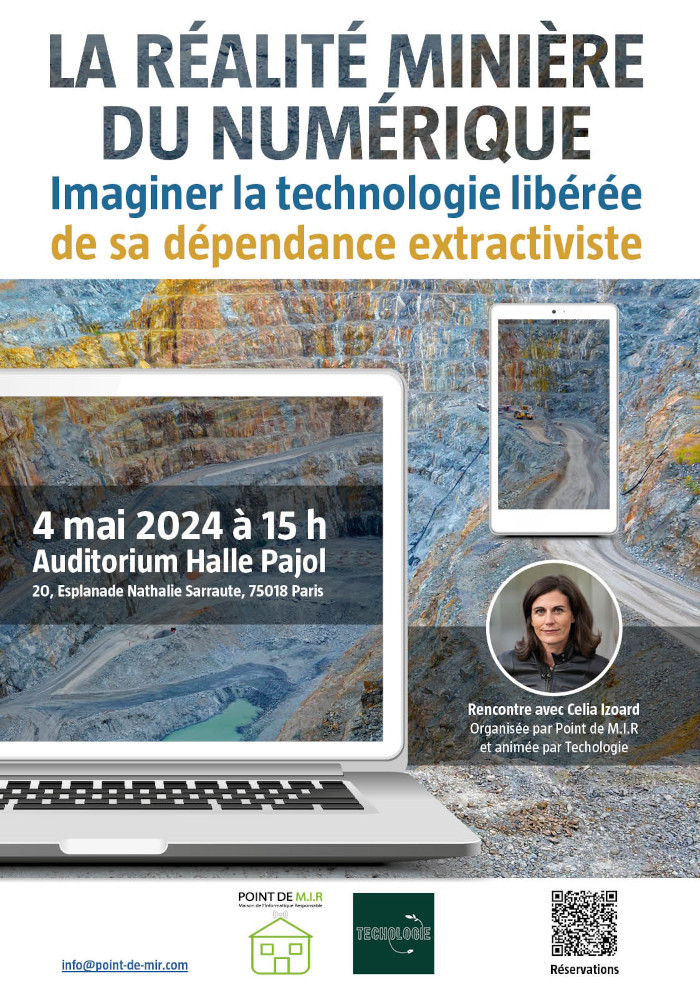

Techologie, le podcast qui questionne le rôle des technologies face aux enjeux écologiques.
Écouter et s'abonner
Écouter Techologie sur votre plateforme de podcast préférée :
Apple , Deezer, Imago, Soundcloud, Spotify... ou flux RSS
La réalité minière du numérique, Rencontre avec Celia Izoard le 4 mai 2024 à Paris
Rencontre organisée par Point de MIR et animée par Techologie. Inscription